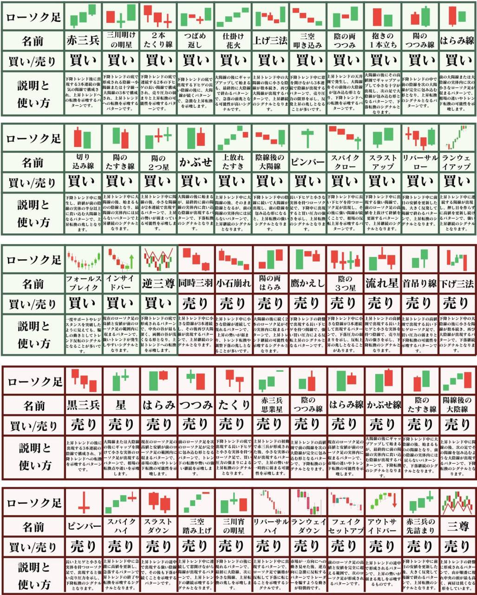
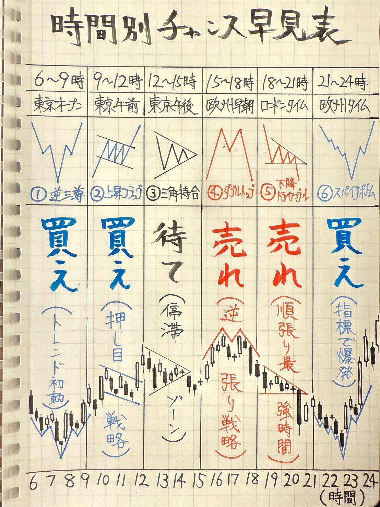
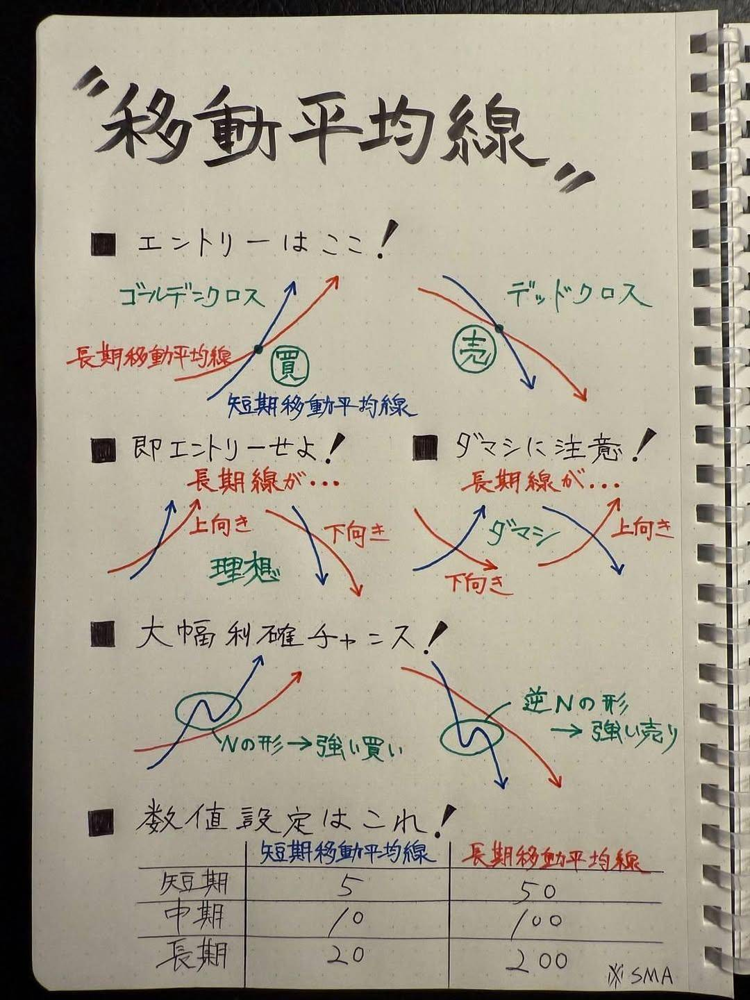
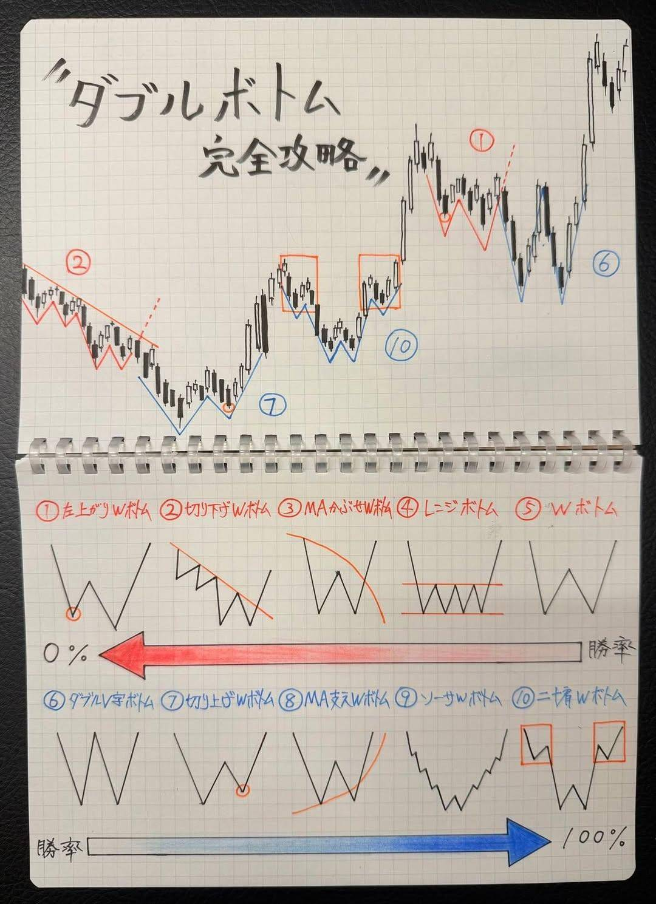
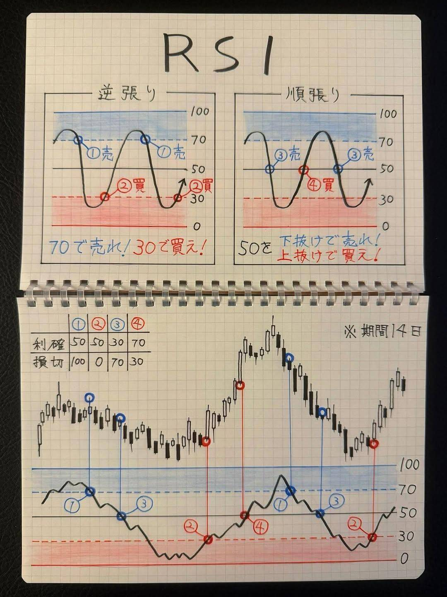
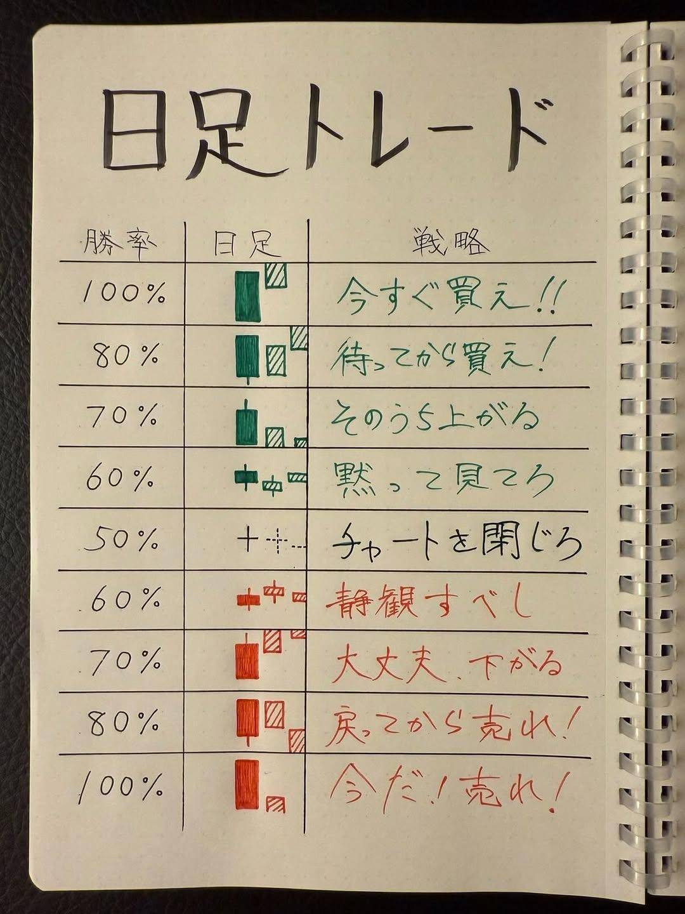

価格は情報を織り込む
業績、ニュース、期待、不安は最終的に価格へ表れます。まずはチャート上の事実を確認します。
Technical Analysis
Chart Training
ローソク足、移動平均線、RSI、出来高、支持線を見ながら「買い」「売り/撤退」「見送り」を選びます。正解後に未来の足が開き、判断理由を確認できます。
参考: Yahoo!ファイナンス NISA記事 の内容を学習用に要約・再構成。
Three Principles
業績、ニュース、期待、不安は最終的に価格へ表れます。まずはチャート上の事実を確認します。
一度できた方向感はしばらく続くことがあります。高値・安値の切り上げ、切り下げを見ます。
投資家心理は似た場面で似た反応をしがちです。チャートパターンはその心理の型として使います。
Quick Lessons
Price
実体とヒゲで、買い手と売り手の攻防を読みます。
Trend
短期線と中期線の向き、クロス、株価との位置を見ます。
Momentum
買われすぎ、売られすぎを数値の目安として確認します。
Participation
上昇や下落に参加者がついてきているかを見ます。
Timing
東京、欧州、米国の入り口は値動きが出やすく、待つ判断も大切です。
Daily
強い陽線、迷いのコマ足、下落継続の足を確率感で整理します。
Notebook Sources
手書きメモは原本として残し、重要ポイントは下のゲームと表に反映しています。






Pattern Notes
| パターン | 意味 | 見るポイント | ゲームでの判断 |
|---|---|---|---|
| 上昇トレンド | 買い優勢 | 高値・安値の切り上げ、MA上向き | 押し目なら買い候補 |
| ダブルトップ | 上値が重い | 2回高値を試して失敗 | 支持線割れなら撤退候補 |
| 三角保ち合い | 方向待ち | 値幅が収束し、抜け方向が未確定 | 抜けるまでは見送り |
| 出来高ブレイク | 参加者増加 | 高値更新と出来高増加が重なる | 買い候補だが損切りも決める |
| ダブルボトム | 下落一服の可能性 | 2番底で下げ止まり、ネックラインを上抜ける | 突破後の押し目なら買い候補 |
| RSI反転 | 売られすぎからの戻り | 30付近から反発し、価格も下げ止まる | 根拠が重なれば買い候補 |
| コマ足・迷い足 | 方向感が弱い | 実体が小さく上下ヒゲが出る | 次の足や節目抜けまで見送り |
Chart Game
Risk Calculator